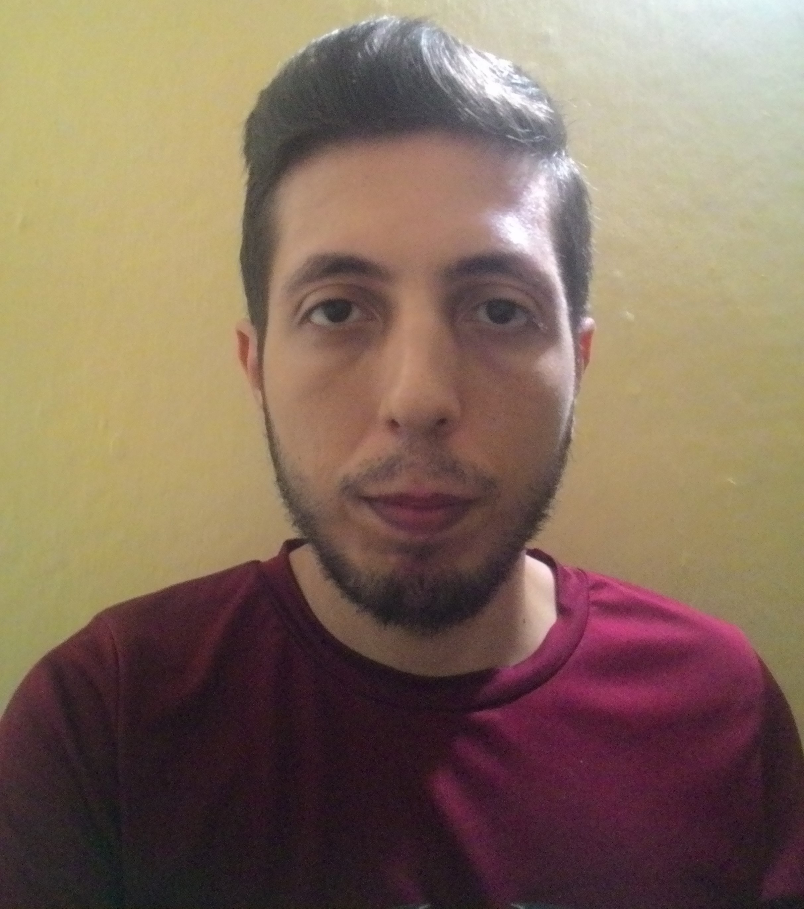

ATI
[UCV]
2022-1
Hola, Richard De Faria
Richard De Faria
Clara Mendoza
Amanda Alvarez
Nancy Calderón
Mario Villatoro
Hugo López
Alejandro Mendez
 Clara Mendoza
Clara Mendoza Amanda Alvarez
Amanda Alvarez Nancy Calderón
Nancy Calderón Mario Villatoro
Mario Villatoro Hugo López
Hugo López Alejandro MendezClara MendozaAmanda AlvarezNancy CalderónMario VillatoroHugo LópezAlejandro Mendez
Alejandro MendezClara MendozaAmanda AlvarezNancy CalderónMario VillatoroHugo LópezAlejandro Mendez